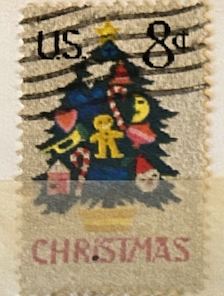
| SOURCE | TITLE| IMAGE MATCH | click to source page |
| eBay | CHRISTMAS STAMP - 1973 CHRISTMAS TREE, Scott 1508 US 8c EXCELLENT MNH-OG (196b2) | eBay | 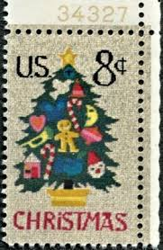 |
| eBay | CHRISTMAS STAMP - 1973 CHRISTMAS TREE, Scott 1508 US 8c EXCELLENT MNH-OG (196b1) | eBay | 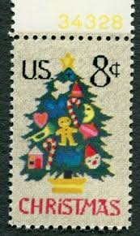 |
| eBay | 8 cent Christmas Tree 1973 USPS Stamp | eBay | 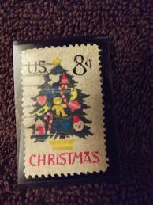 |
| Etsy | 1973 Christmas Catalog - Etsy | 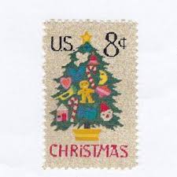 |
| eBay | Tree Postage Stamps for sale | eBay | 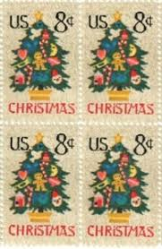 |
| Etsy | 10 Vintage Christmas Tree Needlepoint Stamps - Unused US Holiday Postage for Mailing - 1973 USPS 8c - Etsy Australia | 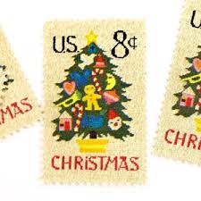 |
| Etsy | Vintage Ceramic C Christmas Tree - Etsy | 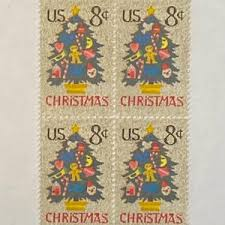 |
| eBay | 8 Cent US Postage Stamps for sale | eBay | 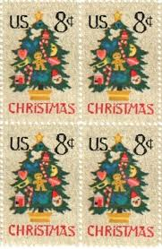 |
| Prejean Creative | Fine Art for Only 49 Cents. A Brief History of the U.S. Postal Service Christmas Stamp. - | 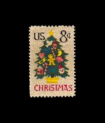 |
| HipStamp | USA 1508: 8c Christmas Tree in Needlepoint, used, F-VF | United States, General Issue Stamp / HipStamp | 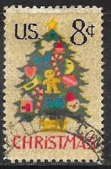 |
| Alamy | Christmas postage stamp hi-res stock photography and images - Page 6 - Alamy | 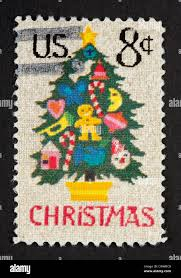 |
| Find Your Stamps Value | Value of usa 8 cent Christmas stamps | 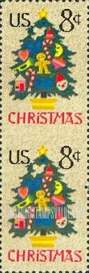 |
| Minted | 8 Cent Christmas Tree Needlepoint Postage Stamps // Set of 10 // UNUSED Vintage Holiday stamps Postage Stamps by Flourish Fine Writing | Minted | 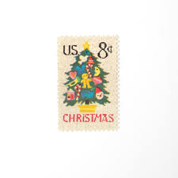 |
| eBay | 8 Cent Trees United States Stamps for sale | eBay | 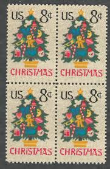 |
| Etsy | 8 Cent Christmas Stamp - Etsy Australia | 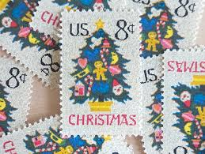 |
| 23 post marks ideas to save today | postage stamps, mail art, stamp and more | 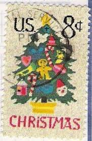 | |
| Alamy | Postman of the year hi-res stock photography and images - Page 3 - Alamy | 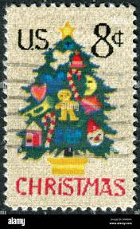 |
| ebid.net | US Stamp #1582 used: 1977 2c Freedom to Speak Out, A Root Of Democracy pair [2] on eBid United States | 141411404 | 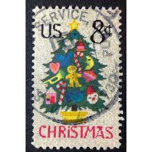 |
| iStock | Christmas Vintage Postage Stamp Stock Photo - Download Image Now - Art, Arts Culture and Entertainment, Christmas - iStock | 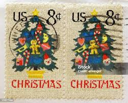 |
| 123RF | Vintage Christmas Stamps 1962 Stock Photos and Images - 123RF | 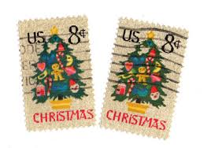 |
| eBay | 8 Cent Seasonal, Christmas Unused US Stamps (1941-Now) for sale | eBay | 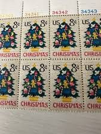 |
| SambaFunk! | Vintage Stamp Sheet 1973 US Christmas Stamp Sheet - Christmas Tree Needlepoint Design, 50 Stamps #1508 1973 US Postage Stamps Christmas Tree Needlepoint Sheet | 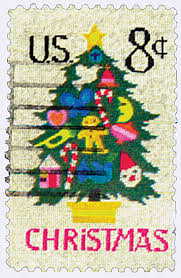 |
| Besinnliche Weinachten und Frieden für alles | 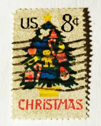 | |
| Etsy | 20 Needlepoint Christmas Tree Stamps, Winter Holiday Postage, Crafter Gift - Etsy | 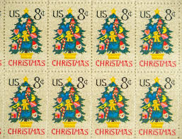 |
| Alamy | Christmas needlepoint hi-res stock photography and images - Alamy | 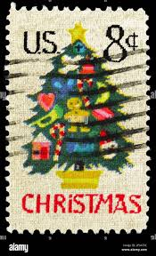 |
| Shutterstock | Christmas Postal Stamp: Over 7,619 Royalty-Free Licensable Stock Photos | Shutterstock | 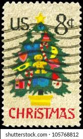 |
| HipStamp | US #1508 Christmas Tree in Needlepoint P# Single; MNH | United States, General Issue Stamp / HipStamp | 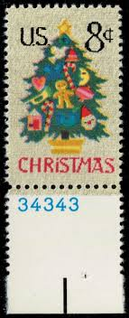 |
| Shutterstock | United States America Circa 2009 Stamp Stock Photo 1319291078 | Shutterstock | 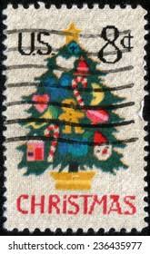 |
| Postcrossing | What the Christmas stamps from your country look like? - Mail, stamps & postal info - Postcrossing Community | 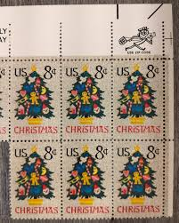 |
| eBay | MCHs Collection_ US Scott #1508 [1973] Christmas Tree~ 8¢ | eBay | 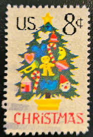 |
| Etsy | Us Forever Stamps Christmas - Etsy | 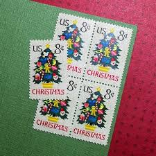 |
| eBay | CHRISTMAS STAMP - 1973 CHRISTMAS TREE, Scott 1508 US 8c EXCELLENT MNH-OG (196b3) | eBay | 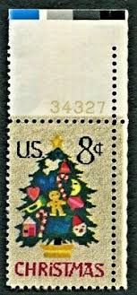 |
| eBay | CHRISTMAS STAMP USA 1973 "Christmas Tree" Scott #1508 Beautiful Colorful /102 | eBay | 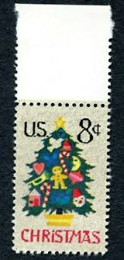 |
| eBay | STAMP CHRISTMAS LOT | eBay | 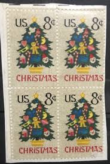 |
| eBay | 1508a, Mint VF NH 8¢ - Imperforate Between Pair Error - Stuart Katz | eBay | 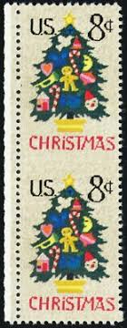 |
| eBay | STAMP US SCOTT 1508 "Christmas Tree" 8 CENT 1973 MH HORIZ PAIR | eBay | 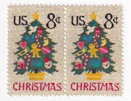 |
| Etsy | 10 Needlepoint Christmas Tree Postage Stamps - Pack of (10) Vintage (issued in 1973) Unused Original USPS Postage Stamps for U.S. Mail. - Etsy | 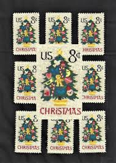 |
| eBay | 1973 U. S. 8c MNH CHRISTMAS TREE in NEEDLEPOINT SCOTT #1508 | eBay | 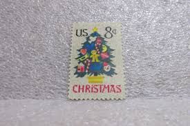 |
| eBay | US. 1508. 8c. Christmas Tree, Christmas Issue , Single w/Pl#. MNH. 1973 | eBay | 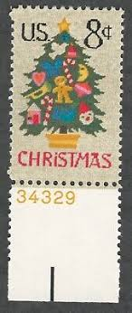 |
| eBay | US 8c 1973 MNH - Christmas - SN 1508 Plate # Single 34328 | eBay | 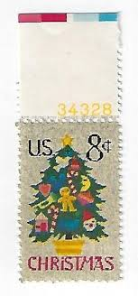 |
| eBay | STAMP US SCOTT 1508 "Christmas Tree" 8 CENT 1973 USED FANCY CANCEL WAVE | eBay | 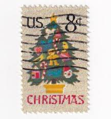 |
| eBay | USA Stamp Christmas 8 Cents United States Postage | eBay | 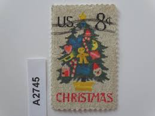 |
| eBay | Scott #1508 Christmas Tree Pair of Stamps - MNH | eBay | 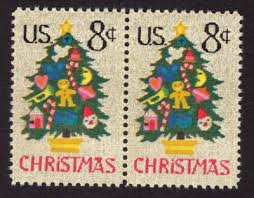 |
| eBay | 1508 * CHRISTMAS * U.S. Postage Stamps MNH | eBay | 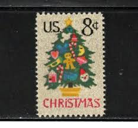 |
| eBay | US. 1508. 8c. Christmas Tree, Christmas Issue , Single w/Pl#. MNH. 1973 | eBay | 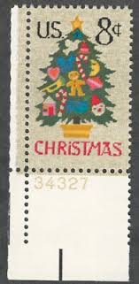 |
| eBay | STAMP US SCOTT 1508 "Christmas Tree" 8 CENT 1973 MNH PB OF 4 UPPER - C | eBay | 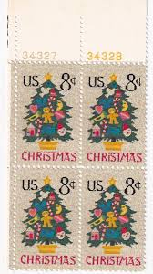 |
| eBay | 23 count 8 cent Christmas Stamp 1973 | eBay | 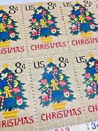 |
| eBay | STAMP US SCOTT 1508 "Christmas Tree" 8 CENT 1973 MNH PB OF 4 UPPER - I | eBay | 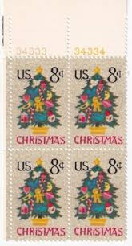 |
| Etsy | Sheet of 50 Christmas Tree Stamps, Unused Postage Stamps, 8 Cent Stamps,, Vintage Collectible Stamps - Etsy | 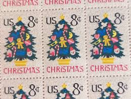 |
| eBay | 1508 PLATE BLOCK OF 4, MR ZIP USE ZIP CODE MNH/OG 8¢ CHRISTMAS TREE | eBay | |
| eBay | Metal Christmas Picture Frame with Vintage 8 cents US postage stamps [265] | eBay | |
| eBay | Christmas 8 Cents United States USA Postage Stamps | eBay | |
| eBay | STAMP US SCOTT 1508 "Christmas Tree" 8 CENT 1973 MNH BLOCK OF 4 WITH ZIP CODE | eBay | |
| Etsy | 10 sellos de Navidad, sellos postales sin usar, sellos de 8 centavos, sellos coleccionables antiguos - Etsy España | |
| eBay | US. 1508. 8c. Christmas Tree, Christmas Issue , Zip Block of 4. MNH. 1973 | eBay | |
| eBay | Scott # 1509 - Crossed Flags - Block Of 4 - MNH -1973 | eBay | |
| eBay | Block of 20 CHRISTMAS TREE / NEEDLEPOINT stamps - Scott #1508 *LOW PRICE* MNH 8c | eBay | |
| eBay | Vintage Christmas Tree Holiday Postage Stamp Enamel Lapel Pin NIP - Jayne Co. | eBay | |
| eBay | Scott# 1508 US Mail Early Block Of 4 1973 8c Christmas Needlepoint - MNH - #1335 | eBay |